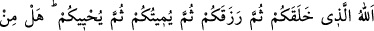
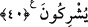

Peygamber: İki melek öğüt vermek için
Sürekli olarak bir güzel seslenirler, dedi.
Ey Allâh’ım! İnfak edenleri doyur,
Her dirhemlerine karşılık yüz bin ver.
Ey Allâh’ım! Sen dünyâda cimrilere
Zarar üstüne zarardan başka bir şey verme.
Cömertlikten elinde mal kalmazsa,
Allâh’ın ihsânı seni nasıl ayaklar altında bırakır?
Ekin ekenin ambarı boşalır ama
Onun iyiliği tarlada ortaya çıkar.
Ama ambarda bırakıp yığanınkini
Bitler ve fareler bir güzel yerler.
Bostân’da ise şöyle geçer:
Hemen bugünden hazineyi dağıt,
Yarın bunun anahtarı senin elinde olmayacak.
Sen kendi azığını yanında götür;
Çoluk çocuğundan acımak gelmez.
Şimdi neyin varsa avucuna al, ihsan et.
Yarın pişman olur, elinin tersini dişlersin.
Hastaların gönlünü gözet; mümkündür ki
Günün birinde senin gönlün de hastalanabilir.
Âcizlerin gönlünü sevindir,
Acze düşeceğin günü hatırla.
El kapılarında dilenci değilsin;
Bunun şükrânesi olarak kapından dilenciyi kovma.
40. Allah, (o yüce varlıktır) ki sizi yaratmış, sonra rızıklandırmıştır; sonra O,
hayatınızı sona erdirecek, daha sonra da sizi (tekrar) diriltecektir. Peki sizin
(Allâh’a eş tuttuğunuz) ortaklarınız içinde bunlardan birini yapabilecek var mı?
Allah onların ortak koştuklarından münezzehtir ve yücedir.
Sadece “Allah, (o yüce varlıktır) ki sizi yaratmış,” hiçbir şey değilken ademden